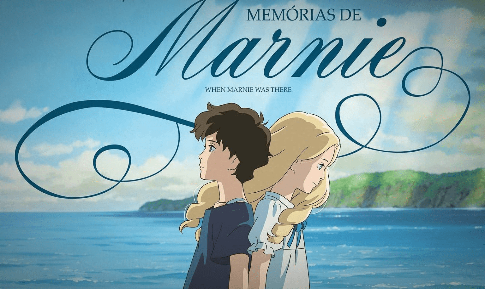

As Memórias de Marnie
Studio GhibliDirigido por: Hiromasa Yonebayashi
2014 | 10 | 1h 43min | Filme baseado em livro
Baseado no livro publicado em 1967 pela romancista britânica Joan G. Robinson, Memórias de Marnie conta a história de uma jovem solitária
de 12 anos,
Anna, que devido a problemas respiratórias é enviada pelos seus tutores para a pequena cidade de Kushiro, situada à beira-mar numa
província do Japão, para passar as férias.
Anna faz amizade com uma garota que mora em uma casa deserta. Mas será que o vínculo entre elas é real?
Mais filmes do Studio:
- O Castelo Animado;
- A viagem de Chihiro;
- Sussuros do Coração;
- O Serviço de Entregas da Kiki;